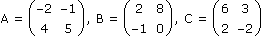
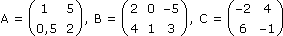
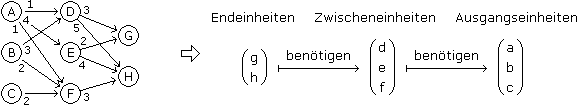
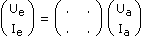
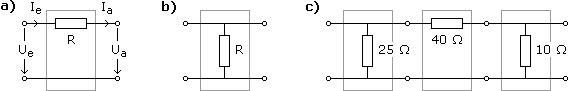
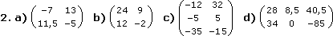
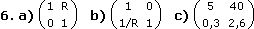

Matrizenrechnung - Aufgaben 1
1.
Überprüfe a) A(BC) = (AB)C, b) (A + B)C = AC + BC, c) A(B + C) = AB + AC, wenn

2.
Berechne a) –A + 3CT, b) AC + A–1, c) BT(2A – C), d) (AT + 2C)B, wenn

3.
Löse sowohl über die Cramer'sche Regel als auch über die inverse Koeffizientenmatrix:
a)
(1) 8x + 5y = 10
(2) 2x + y = –4
b)
(1) –10x + 7y + 5z = 2
(2) 3x – y – 4z = 1
(3) 2y – 5z = –3
4.
Das folgende Diagramm zeigt, wie viel Einheiten wovon in die Produktion einer Einheit eines Folgeprodukts einfließen. Formuliere das als lineare Abbildung und berechne, wie viel Einheiten von A, B, C es braucht, um 30 von G und 25 von H zu produzieren.

5.
Bilde das Dreieck ABC[ A(5|1), B(9|3), C(7|5) ] durch eine 37°-Drehung um den Ursprung auf A'B'C' ab.
6.
Bestimme die Kettenmatrix  für die Vierpole

und die fehlenden Größen in c), wenn d) Ua = 5 V, Ia = 0,5 A, e) Ue = 50 V, Ie = 3,2 A.
Ergebnisse:
 3. a) L = {–15, 26}
b) L = {28, 31, 13}
4. 930, 795, 150
5. A'(3,4|3,8), B'(5,4|7,8), C'(2,6|8,2)
 d) Ue = 45 V, Ie = 2,8 A e) Ua = 2 V, Ia = 1 A